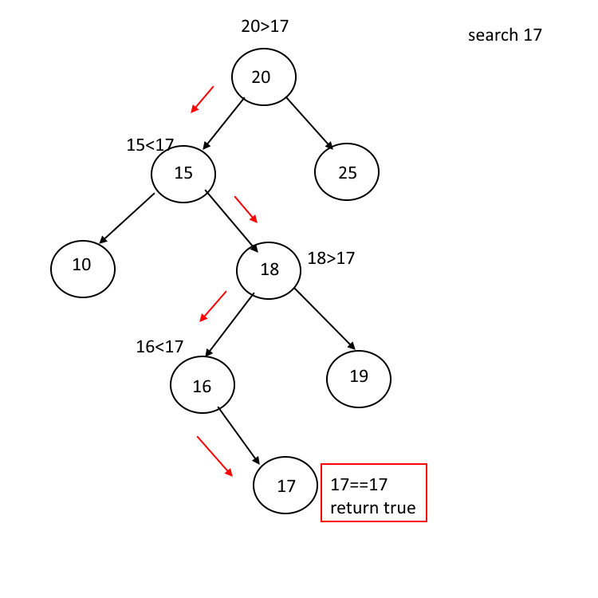
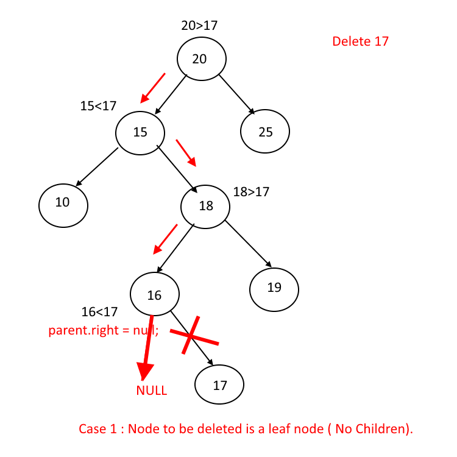
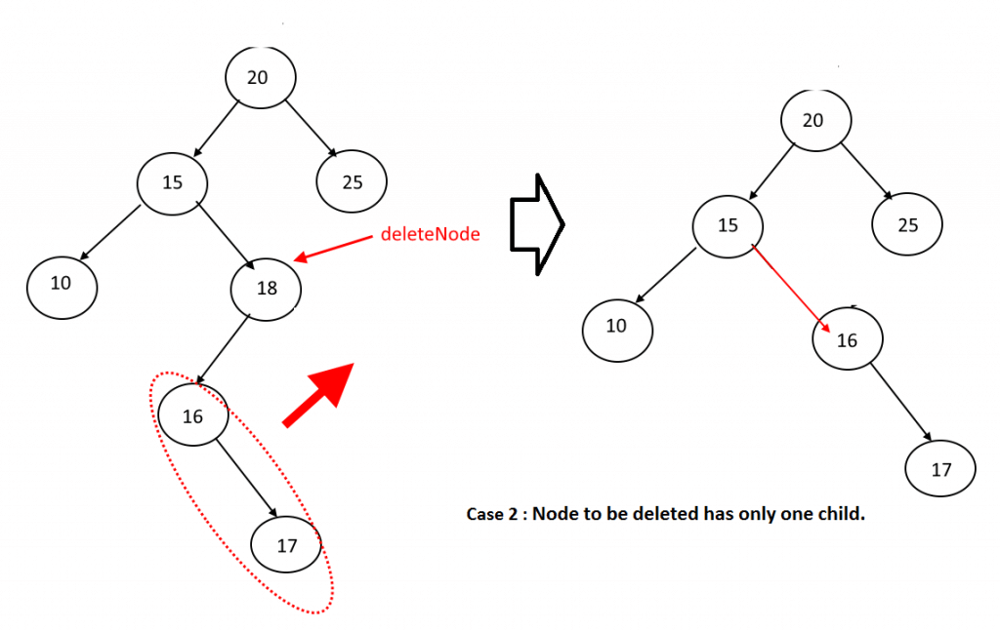
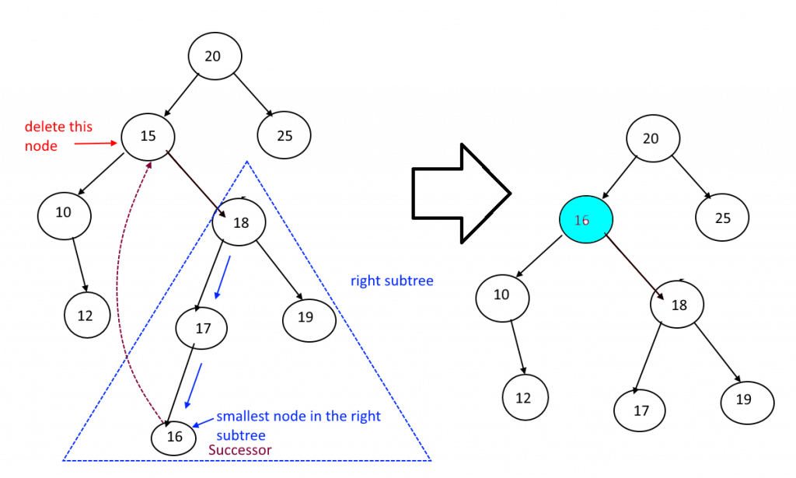

Binary search trees

Binary search tree. Source: cs.cmu.edu/~adamchik
This property allows us to efficiently search for a key.
Each subtree is itself a binary search tree.
Searching

BST searching. Source: algorithms.tutorialhorizon.com
- If target == root's key, we found the target.
- If target < root's key, search the left subtree.
- If target > root's key, search the right subtree.
Insertion
Insertion is similar to searching. First we search for the key that we want to insert.- If we find it, do not insert the key (there are no duplicates).
- If we reach a null reference, replace it with a new node.
Deletion

BST deletion (no children). Source: algorithms.tutorialhorizon.com

BST deletion (1 child). Source: algorithms.tutorialhorizon.com

BST deletion (2 children). Source: algorithms.tutorialhorizon.com
- No children: Update parent's left or right pointer to null (depending on whether nodeToDelete is a left child or a right child).
- 1 child: Update parent's pointer to point to nodeToDelete's child.
- 2 children: Replace nodeToDelete with its successor
(the successor is the smallest node in the right subtree).
Then delete the successor from the right subtree (deleting the successor will be one of the first 2 cases).
Runtime
The runtime of search, insert, and delete is proportional to the height of the tree, because the path to any node cannot be more than the height. We can use a self-balancing tree to ensure that the height does not grow too large.Implementation
Sample codeClasses: BSTreeSet / BSTreeMap
(BSTreeSet with non-recursive add and contains)
Interfaces: Set / Map
These are simplified implementations of TreeSet and TreeMap from the JCF. Rebalancing is not implemented.
- The key type must implement Comparable.
- In some BST implementations, each node has a pointer to its parent, which can be useful for iterating or rebalancing.